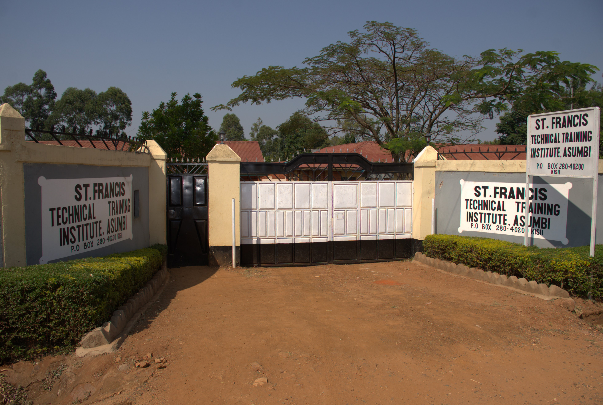
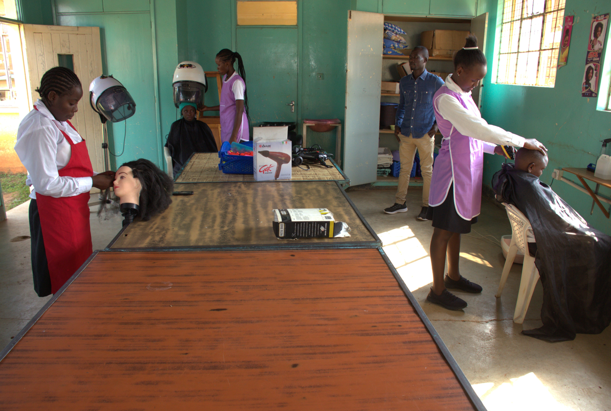

About St.Francis Technical Training Institute
Discover our history, mission, and commitment to academic excellence
Our History
St Francis Technical Training Institute is the brain-child of Franciscan Sisters of St Joseph that founded it on 8th May, 1987 following the Golden Jubilee of the Franciscan Sisters of St. Joseph - Asumbi congregation in December 1986. It was established as thanksgiving facility to God for enabling the congregation to celebrate its fifty years of existence. The school was established to cater for the educational need for young girls who completed their secondary school but could not join other institutions of higher levels due to financial problems, as well as those who completed their primary education but could not proceed with their secondary education.
St Francis technical Training Institute began with an intake of twenty girls, an administrator and three instructors (Religion Sisters). In the same year of its foundation, it was inspected by inspectorate from Ministry of Technical Training and Applied Technology and thereafter was approved to offer Technical and Business courses. Currently, the institute administer Kenya National Examination Council.
From its humble beginning, the institute has grown to its current population of over 200 students, 23 teaching staff and 20 support staff. While it began primarily as an institute offering garment making and carpentry courses, it now offer various courses that include Food and Beverage Management, Craft and Artisan Certificate in Food and Beverage Management, Craft and Artisan in Garment Making, Secretarial and Computer studies, Hair Dressing and Beauty Therapy, Carpentry and Joinery, Human Resource Management, Catering and accommodation operation, Electrical, Accounting, Social Work and Community Development. At its earliest stages, St Francis Technical Training Institute catered for only girls. These were the years between 1987 to 1990. Later on 1990 the male students were admitted. The institute had been performing well over the years and it continues to keep its flag flying.
Our Mission
To work hard and enhance long learning, foster personal growth and develop leadership qualities in technical and business skills and capabilities towards the service of the society .
Our Vision
To be the best among all in future, in provision of wholistic growth quality education and help.
Core Values
Excellence
We strive for the highest standards in teaching, research, and service.
Integrity
We uphold honesty, ethics, and transparency in all our endeavors.
Innovation
We embrace creativity and new ideas to solve complex problems.
Diversity
We celebrate differences and promote an inclusive community.
Community
We foster collaboration and engagement with our local and global communities.
Lifelong Learning
We encourage continuous growth and development beyond the classroom.
Why Choose St.Francis Technical Training Institute?
- World-class faculty with extensive industry experience
- State-of-the-art facilities and laboratories
- Comprehensive curriculum aligned with industry needs
- Strong emphasis on practical learning and research
- Vibrant campus life with numerous clubs and activities
- Excellent career services and placement support
- Global partnerships and exchange programs
- Financial aid and scholarship opportunities
Campus Facilities

Modern Library
24/7 access to thousands of books, journals, and digital resources.

Computer Centers
High-speed internet and latest software for all students.

Cafeteria
Hygienic and nutritious food options for students and staff.

Main Campus
Modern classrooms and administrative buildings for a conducive learning environment.

Secure Campus
24/7 security with controlled access for student safety.

Training Labs
Specialized training facilities for practical skills development.